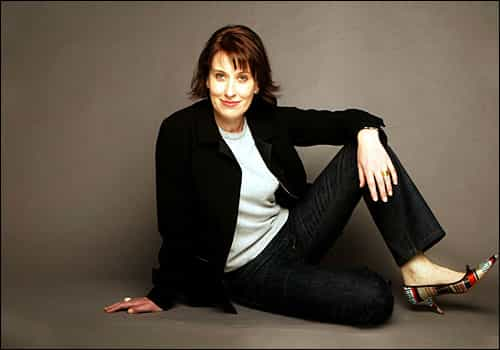

< < < Back
Australian Newscaster Links Male Tennis Racquet Smashing With Domestic Violence – Return Of Kings
According to documents leaked in 2013, Australian ABC News 24 presenter Virginia Trioli received an annual salary of $235,664. When she provides “gems” like this, where Trioli glibly links professional male tennis players smashing racquets with the onset of serious domestic violence, you have to wonder if half her remuneration goes towards obtaining (but clearly not using) anti-psychotic drugs.
By treating racquet smashing as a prelude to male-on-female domestic violence, and juxtaposing it with the horrendous decision to name Rosie Batty 2015 Australian of the Year, Trioli is showing her true, radically misandrist colors. Under Triolian logic, any male who stubs their toe and then curses profusely (or kicks the air) is some sort of ticking time bomb about to catastrophically abuse his girlfriend or wife. But the female who does the same thing, just like a tennis temper tantrum female, is unworthy of any “danger rating” mention. Feminist logic at its most cogent.

Serious journalist and news presenter.
Trioli gleefully ignores the truth that females throw some form of tennis tantrum, including engaging in racquet smashing, all the time, just like their male counterparts. Coco Vandeweghe, Serena Williams, Victoria Azarenka and Maria Sharapova are just some of the menagerie of women stars known for their on-court antics, tirades and verbal abuse towards officials. Footage also exists of Williams and Azarenka smashing racquets, and Ana Ivanovic admits to smashing three racquets at the US Open after losing a match point opportunity. Vandeweghe once smashed her racquet into the net simply because she did not get her own way. If you and I had all day, we could discuss dozens of other examples of WTA player aggression, the likes of which would give every Yonex, Wilson or Head racquet (or your average umpire) eternal nightmares.
Reality check
The irony of the farce on display Monday morning Australian time is that it took Trioli’s male colleague, sports presenter Paul Kennedy, to establish reality for her. Kennedy explained that female players (yes, those impeccable female players) are apt to racquet smash and generally misbehave as well. In the meantime, co-host Michael Rowland was left to suppress his own chuckles and all-round merriment. With no comeback in sight, Trioli pressed on with other stories, never attempting to correct her ridiculous statement.
I cannot decide which is worse: obviously agenda-driven Trioli being a news show presenter in the first place, or being a news show presenter buttressed entirely by the Australian taxpayer. Despite (read: because of) the Australian Broadcasting Corporation (ABC)’s leftist appeal, viewers routinely abandon it. The public instead flocks to the three major commercial networks and their digital offshoots, or satellite television. When the Abbott government announced systemic cuts to the resources-wasting ABC in the latter half of 2014, the pro-public broadcaster do-gooders did not bother to mention the ABC’s poor ratings in their criticisms. And the ABC doesn’t even steal 20% of viewers’ time with commercials!
In many ways, however, we should be grateful for Trioli and those of her ilk. Anti-male hysteria is often wrapped in inconvenient euphemisms that the average person finds difficult to unpack and then process. With such an overt brain explosion, our logically- and contextually-challenged friend Trioli has highlighted and embodied this hysteria explicitly.

Your ABC: where news (and unwanted, irrelevant opinions) come courtesy of you, the taxpayer.
The war against men
Men nowadays, especially grandfathers, and even fathers, cannot come within two yards of a children’s playground. Physical affection towards a child or grandchild raises the risk of being perceived as a sexual predator. Society’s fetish for unfettered pedophile suspicions (and accusations) means that these men, or the near-extinct male elementary school teacher, are simply unwelcome additions to a child’s public or educational experience. Trioli’s domestic violence diatribe adds to this multi-faceted lens of all men not only being potentially abusive but likely to be abusive. Only the most minimal and innocuous criteria need to be met, namely having a penis.
Another quaint aspect is Trioli’s insistence that Rosie Batty would herself link smashing tennis racquets with domestic violence. Speaking for females is a social crime when men do it, but Trioli believes she can extend Batty’s already problematic seizure of the domestic violence debate to whatever tenuous and tendentious conclusion desirable.
At its heart, Trioli’s argument seeks to demonize men expressing normal emotions, negative or otherwise. By failing to mention female anger, even though it manifests itself every day, she is justifying it, while condemning men for the exact same thing. Denial is an additional, intrinsic part of Trioli’s mindset. When a Twitter respondent took her to task for her opportunism, she “countered”:
Keep the wheels spinning, Ms. Trioli, even if it’s backwards.
Read More: The Major Flaw In Today’s Perception Of Domestic Violence